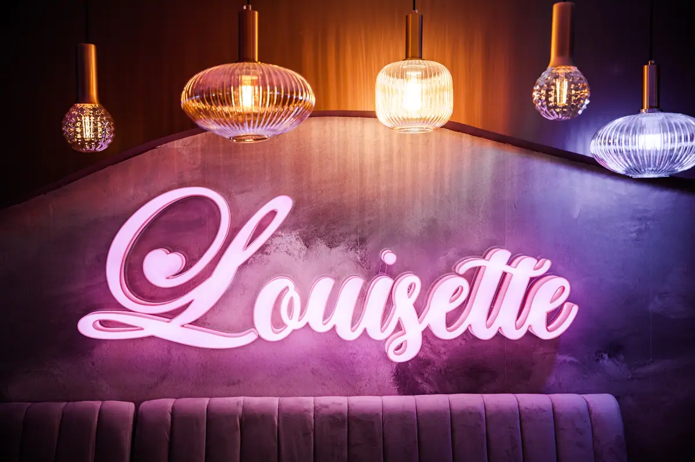
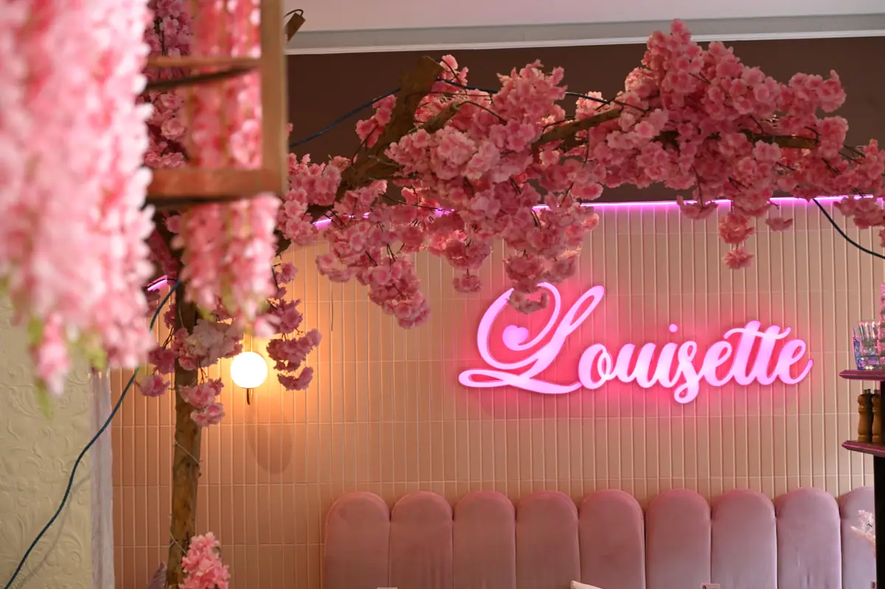
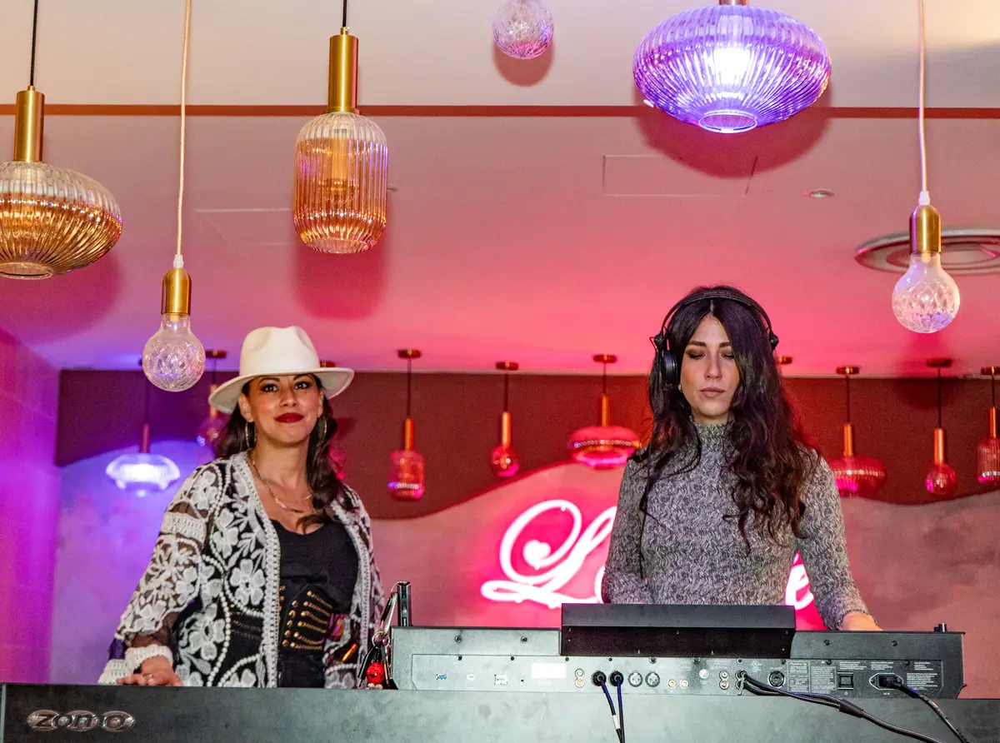

Avant le lever
de rideau.
Depuis les cafés-concerts du XIXe siècle, les Grands Boulevards sont le théâtre de Paris. Louisette en est la loge : on y dîne avant la représentation, on y trinque après les applaudissements.
Le soir



Les salles autour de la maison.
Théâtres, cinémas et music-halls : le patrimoine du spectacle parisien commence devant la terrasse. Les durées indiquées sont des temps de marche approximatifs depuis le 8 boulevard Saint-Denis.
La plus grande salle de cinéma d'Europe et son décor Art déco classé. Avant-premières, concerts et séances mythiques, boulevard Poissonnière.
Grande scène du boulevard, à deux pas de la Porte Saint-Martin.
Salle à l'italienne historique, voisine immédiate, pour le théâtre de boulevard.
Comédies et pièces populaires, boulevard Poissonnière.
One-man-shows et humoristes, boulevard Bonne-Nouvelle.
Café-théâtre culte, à quelques rues — soirée rires puis dîner tardif.
Grande scène du boulevard de Strasbourg, théâtre contemporain.
Salle historique du boulevard Montmartre.
Le music-hall légendaire, pour prolonger après le spectacle.
Scène pluridisciplinaire du boulevard de Strasbourg : théâtre, danse, musique.
Le théâtre de boulevard dans sa tradition.
Grands spectacles et comédies musicales.
Danse et théâtre contemporain, place de la République.
Dîner avant, sans regarder l'heure.
La cuisine est servie en continu à partir de 8 h. Arrivez à 19 h, prenez une entrée, un plat et un dessert, et rejoignez votre salle en quelques minutes de marche. Indiquez-nous l'heure de votre représentation au moment de réserver : nous organisons le service en conséquence.
Pour les sorties en groupe — comité d'entreprise, association, anniversaire au théâtre — la page groupes détaille les formats et les capacités.
Après le rappel.
Quand les salles s'éteignent, la maison s'allume. Cuisine servie tard, cocktails au comptoir, DJ les soirs de fin de semaine : de quoi refaire le spectacle autour d'un verre jusqu'à 2 h du matin, sans quitter le quartier.
Les horaires, les accès et les lignes de métro qui circulent tard sont sur la page infos pratiques.
Une table avant le spectacle ?
Précisez l'heure du lever de rideau, on cale le service dessus.